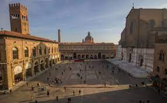
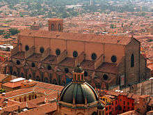
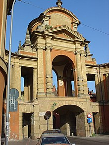

Monuments
Full of quaint views and monumental attractions, there are really numerous places to visit, starting from Piazza Maggiore, the heart of social, economic and political activities. Its look dates back to the 16th century, and here you can admire some of the most noticeable and representative buildings in town. On the southern side lies the majestic Saint Petronius' Basilica, dedicated to the patron saint of the town. Despite the fact that its building started in the 14th century, the structure has never been completed.
Piazza Maggiore (Piâza Mażåur in the bolognese language) is a central square in Bologna, region of Emilia-Romagna, Italy. The appearance in the 21st century, generally reflects the layout from the 15th century. The Northwest corner opens into Piazza del Nettuno with its Fontana del Nettuno, while the Northeast corner opens into the narrower Piazza Re Enzo, running along the flanks of the Palazzo Re Enzo that merges with the Palazzo del Podestà. Flanking the Piazza del Nettuno is the Biblioteca Salaborsa.
Piazza Maggiore di Bologna
The Basilica of San Petronio is a minor basilica and church of the Archdiocese of
Bologna located in
Bologna, Emilia Romagna, northern Italy. It dominates Piazza Maggiore. The basilica is dedicated to the
patron saint of the city, Saint Petronius, who was the bishop of Bologna in the fifth century.
Construction began in 1390 and its main facade has remained unfinished since. The building was
transferred from the city to the diocese in 1929; the basilica was finally consecrated in 1954. It has
been the seat of the relics of Bologna's patron saint only since 2000; until then they were preserved in
the Santo Stefano church of Bologna

San Petronio Basilica
The Arco del Melloncelo is an 18th-century Rococo structure in Bologna, that forms a
pedestrian portico over the road (hence an arch); it is part of the Portico di San Luca, a long arcade
that sheltered the walk from the Cathedral of Bologna to the hillside Sanctuary of San Luca, Bologna. It
lies beyond the gates of the Porta Saragozza, outside the former city walls of Bologna.
The arch solved the problem of a site where two roads intersected at right angles, and allowed the foot
traffic of the pilgrims to proceed above the road, Via Saragozza, uninterrupted.

Arco del Melloncelo